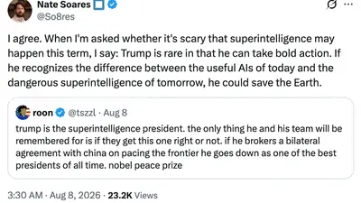

Robert Reich
@rbreich.bsky.social
· 08/10 00:00· 命中「OpenAI」
70 percent of Microsoft's AI revenue is coming from a single customer — OpenAI. I have to ask: is the AI bubble about to burst?
 娛樂2026.08.10
娛樂2026.08.10
 娛樂2026.08.09
娛樂2026.08.09
 娛樂2026.08.08
娛樂2026.08.08
 生活2026.08.08
生活2026.08.08
 時事2026.08.06
時事2026.08.06
 生活2026.08.06
生活2026.08.06
Social Lab（OpView 社群口碑資料庫）每週彙整各平台熱門事件。榜上的數據以圖表呈現， 這裡列出每週彙整的標題與觀測期間，點進去看完整排行。
 PTT
PTT
 Facebook
Facebook
 Dcard
Dcard
Bluesky 的全站熱門話題，以英語圈的娛樂、體育、政治為主，僅供參考。
以 30 小時內、依讚數與轉發數排序，已過濾掉 AI 繪圖標籤與明顯洗版內容。
70 percent of Microsoft's AI revenue is coming from a single customer — OpenAI. I have to ask: is the AI bubble about to burst?
see this is what I find confusing about the rationalists. no, Donald Trump, a president who invested the US in Nvidia and who is singularly devoted to the stock market, will not broker a no-more-AI treaty with China, a country with probably very little interest in such a thing. it feels like cope

"But there is no honour for the humanities in regaining their standing through the attention of AI companies, if they engage only on the technology industry’s terms. In that case, they will have become important in exactly the wrong way." www.ft.com/content/bdb3...
google replaced regular photos search (pretty useful) with gemini search (worse than a toddler) and i want to scream
When I told Anthropic interlocutors that I avoid contact w LLMs, their response was bemused:perhaps I hadn’t spent enough time w them? there was light in their eyes when they talked about Claude. It dawned on me that they're under enchantment. Like Pygmalion, they had fallen in love w their creation
Could an LLM extend a meaningful invitation to vampire for purposes of threshold crossing?
The unsaid part of this is that both Google and xAI are looking like they’re sort of giving up on frontier models, which means they will create more supply and less demand for AI compute, further centralizing it around Anthropic and OpenAI. The void yearns
"Alarmed, Andrew asked the agent to undo this. 'Bad news — I can't add them back,' the AI agent replied." Yeah this is 100% how WWIII is gonna start
Whenever I hear someone say that they're using a generative LLM to research something that involves looking up a relatively simple, uncontroversial fact, I want to blast myself into the sun.
Basicamente: toda empresa que está tendo "lucro recorde" com IA está vendendo serviços para Open AI e Anthropic. Essas duas empresas, por sua vez, são tão deficitárias que, no momento, parece impossível prever qualquer lucro. www.youtube.com/watch?v=68X8...
Great story from ABC this morning about a chap in Melbourne who asked an AI agent (OpenClaw) to book a gym class, and it ended up hacking the gym's booking system to kick people off the waiting list. www.abc.net.au/news/2026-08...
A thing that I think about these days: I wrote a thesis. I wrote it by hand and typed it out. I sweated over it for weeks, poring through the card-catalog, using inter-library loan, living on a diet of coffee and fingernails. I attained my degree. No fucking AI agent did that — I did that.
Who deserves the most style points for how their LLM commits felonies? (it's openai) verysane.substack.com/p/felonybenc...
i think about how for a LLM a tool call is just saying json out loud and suddenly you’re fed results. i want to live in the world like that
Everyday I wish it would go back to pre-llm days